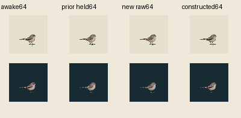
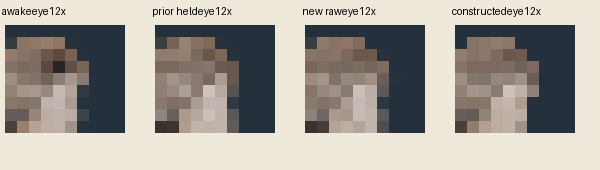

Actual64CSS/world64, density1, pivot38,50. One new genuinely closed-eye native drawing; exact awake retained. The main constructed pair uses one preregistered20pixel eye/context patch, unchanged canonicalbody/head/beak/feet outside it, and one projection into the fixed59awakeRGB palette. No samplephase shift, repaint, eye darkening, bodyfit or retry. A real native eyelid and a fixedbody do not establish readable100ms closure.
| Surface | Prior ambiguous raw | New full native raw | Raw sameXY patch | Main fixedpalette patch |
|---|---|---|---|---|
| Light | ||||
| Dark |
Closed ticks60–62:100ms total. Exact awake returns63; terminal89 held to3000ms, manual replay. Whole new native source is a diagnostic control; the main eligibility candidate is only the constructed pair. Contacts[]/supportWorldnull, source-only, no fullcommonfamily/input5/currentMac admission.

